Main_menu.vi

The main menu function acts as the focal point for navigating and utilizing the diverse range of features and capabilities within our application. When users initiate the application, they encounter a user-friendly menu interface, offering a variety of options that cater to their specific requirements.
Key functionalities include:
Initiating window plots for data visualization
Establishing communication with microcontrollers
Implementing robust error handling mechanisms
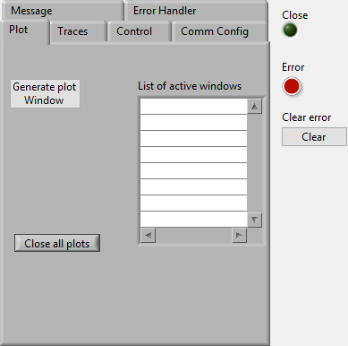
Clear Errors.vi
C:\Program Files\National Instruments\LabVIEW 2022\vi.lib\Utility\error.llb\Clear Errors.vi
Fc_Get_TRACEDATA.vi
C:\Users\v_hernandez\Documents\Projects\C2\lrs-soc\labview\dev_labview\Fc_Get_TRACEDATA.vi
Fc_new_plot.vi
C:\Users\v_hernandez\Documents\Projects\C2\lrs-soc\labview\dev_labview\Fc_new_plot.vi
Fc_receiver_queue_Main_menu.vi
C:\Users\v_hernandez\Documents\Projects\C2\lrs-soc\labview\dev_labview\Fc_receiver_queue_Main_menu.vi
 Fc_save_conf_to_uc.vi
Fc_save_conf_to_uc.vi
C:\Users\v_hernandez\Documents\Projects\C2\lrs-soc\labview\dev_labview\Fc_save_conf_to_uc.vi
Fc_SaveCTRLparams.vi
C:\Users\v_hernandez\Documents\Projects\C2\lrs-soc\labview\dev_labview\Fc_SaveCTRLparams.vi
Fc_Send_Msj_Nplot.vi
C:\Users\v_hernandez\Documents\Projects\C2\lrs-soc\labview\dev_labview\Fc_Send_Msj_Nplot.vi
Fc_start_record.vi
C:\Users\v_hernandez\Documents\Projects\C2\lrs-soc\labview\dev_labview\Fc_start_record.vi
Fc_to_CS_Enable.vi
C:\Users\v_hernandez\Documents\Projects\C2\lrs-soc\labview\dev_labview\Fc_to_CS_Enable.vi
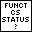 Fc_to_define_CSstatus.vi
C:\Users\v_hernandez\Documents\Projects\C2\lrs-soc\labview\dev_labview\Fc_to_define_CSstatus.vi
Fc_update_params_from_uc.vi
C:\Users\v_hernandez\Documents\Projects\C2\lrs-soc\labview\dev_labview\Fc_update_params_from_uc.vi
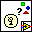 lveventtype.ctl
C:\Program Files\National Instruments\LabVIEW 2022\vi.lib\event_ctls.llb\lveventtype.ctl
 Simple Error Handler.vi
Simple Error Handler.vi
C:\Program Files\National Instruments\LabVIEW 2022\vi.lib\Utility\error.llb\Simple Error Handler.vi
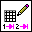 Write Delimited Spreadsheet (DBL).vi
C:\Program Files\National Instruments\LabVIEW 2022\vi.lib\Utility\file.llb\Write Delimited Spreadsheet (DBL).vi
 Write Delimited Spreadsheet.vi
Write Delimited Spreadsheet.vi
C:\Program Files\National Instruments\LabVIEW 2022\vi.lib\Utility\file.llb\Write Delimited Spreadsheet.vi

Window_plot.vi

This window has the capability to visualize and analyze the graphs of the stored signals from the Main_menu.
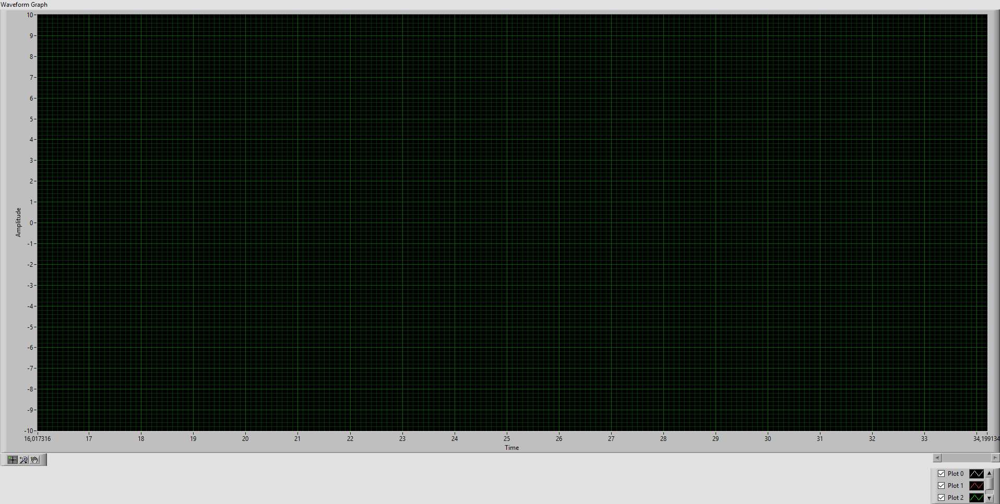
Fc_2update_graph.vi
C:\Users\v_hernandez\Documents\Projects\C2\lrs-soc\labview\dev_labview\Fc_2update_graph.vi
Fc_evaluate_state.vi
C:\Users\v_hernandez\Documents\Projects\C2\lrs-soc\labview\dev_labview\Fc_evaluate_state.vi
Fc_MenuSelections.vi
C:\Users\v_hernandez\Documents\Projects\C2\lrs-soc\labview\dev_labview\Fc_MenuSelections.vi
Fc_queue_receiver2Window.vi
C:\Users\v_hernandez\Documents\Projects\C2\lrs-soc\labview\dev_labview\Fc_queue_receiver2Window.vi
 Simple Error Handler.vi
Simple Error Handler.vi
C:\Program Files\National Instruments\LabVIEW 2022\vi.lib\Utility\error.llb\Simple Error Handler.vi
Call_signal_fromHW.vi
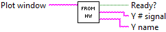
Through this function you can select the stored signals from the Main_menu.
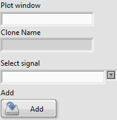
 Ready?
Ready?
 Y name
Y name
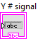 Y # signal
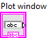 Plot window
Call_signal_fromfile.vi
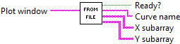
Through this function you can select the signals stored in a CSV file.
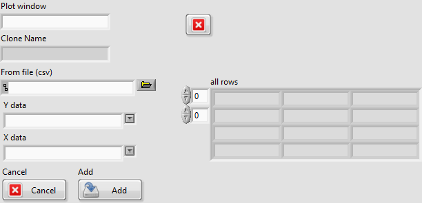
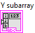 Y subarray
String
X subarray
String
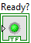 Ready?
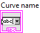 Curve name
 Plot window
Plot window